项目质量管理
项目质量管理包括把组织的质量政策应用于规划、管理、控制项目和产品质量要求，以满足相关方目标的各个过程。此外，项目质量管理以执行组织的名义支持过程的持续改进活动。
项目质量管理过程包括：
8.1 规划质量管理 — 识别项目及其可交付成果的质量要求和/或标准，并书面描述项目将如何证明符合质量要求和/或标准的过程。
8.2 管理质量 — 管理质量是把组织的质量政策用于项目，并将质量管理计划转化为可执行的质量活动的过程。
8.3 控制质量 — 为了评估绩效，确保项目输出完整、正确，并满足客户期望，而监督和记录质量管理活动执行结果的过程。
图 8-1 概述了项目质量管理的各个过程。虽然各项目质量管理过程通常以界限分明、相互独立的形式出现，但在实践中它们会以《PMBOK® 无法全面叙述的方式相互交叠、相互作用。此外，不同行业和公司的质量过程各不相同。
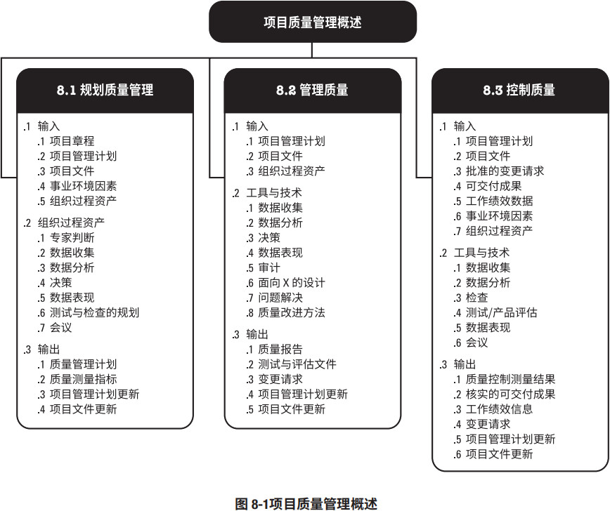
图 8-2 概述了项目质量管理过程的主要输入和输出以及这些过程在项目质量管理知识领域中的相互关系。规划质量管理过程关注工作需要达到的质量，管理质量则关注管理整个项目期间的质量过程。在管理质量过程期间，在规划质量管理过程中识别的质量要求成为测试与评估工具，将用于控制质量过程，以确认项目是否达到这些质量要求。控制质量关注工作成果与质量要求的比较，确保结果可接受。项目质量管理知识领域有两个用于其他知识领域的特定输出，即核实的可交付成果和质量报告。
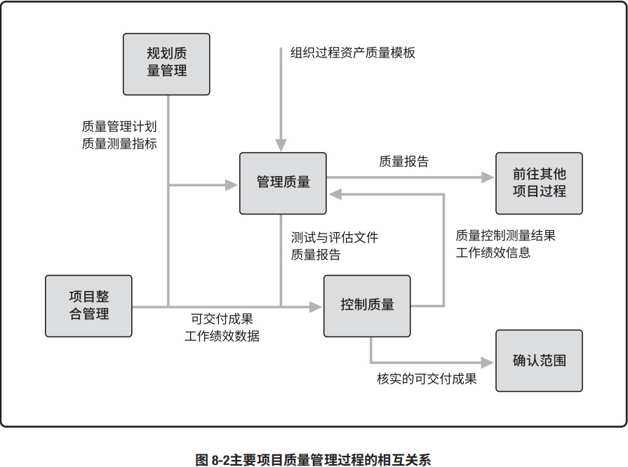
项目质量管理的核心概念
项目质量管理需要兼顾项目管理与项目可交付成果两个方面，它适用于所有项目，无论项目的可交付成果具有何种特性。质量的测量方法和技术则需专门针对项目所产生的可交付成果类型而定，例如，对于软件与核电站建设的可交付成果，项目质量管理需要采用不同的方法和措施。无论什么项目，若未达到质量要求，都会给某个或全部项目相关方带来严重的负面后果，例如：
- 为满足客户要求而让项目团队超负荷工作，就可能导致利润下降、整体项目风险增加，以及员工疲劳、出错或返工。
- 为满足项目进度目标而仓促完成预定的质量检查，就可能造成检验疏漏、利润下降，以及后续风险增加。
“质量”与“等级”不是相同的概念。质量作为实现的性能或成果，是“一系列内在特性满足要求的程度”（ISO 9000）[18]。等级作为设计意图，是对用途相同但技术特性不同的可交付成果的级别分类。项目经理及项目管理团队负责权衡，以便同时达到所要求的质量与等级水平。质量水平未达到质量要求肯定是个问题，而低等级产品不一定是个问题。例如：
- 一个低等级（功能有限）产品具备高质量（无明显缺陷），也许不是问题。该产品适合一般使用。
- 一个高等级（功能繁多）产品质量低（有许多缺陷），也许是个问题。该产品的功能会因质量低劣而无效和/或低效。
预防胜于检查。最好将质量设计到可交付成果中，而不是在检查时发现质量问题。预防错误的成本通常远低于在检查或使用中发现并纠正错误的成本。
根据不同的项目和行业领域，项目团队可能需要具备统计控制过程方面的实用知识，以便评估控制质量的输出中所包含的数据。项目管理团队应了解以下术语之间的差别：
- “预防”（保证过程中不出现错误）与“检查”（保证错误不落到客户手中）；
- “属性抽样”（结果为合格或不合格）与“变量抽样”（在连续的量表上标明结果所处的位置，表明合格的程度）；
- “公差”（结果的可接受范围）与“控制界限”（在统计意义上稳定的过程或过程绩效的普通偏差的边界）。
质量成本 (COQ) 包括在产品生命周期中为预防不符合要求、为评价产品或服务是否符合要求，以及因未达到要求（返工）而发生的所有成本。失败成本通常分为内部（项目团队发现的）和外部（客户发现的）两类。失败成本也称为劣质成本。第 8.1.2.3 节给出了每类质量成本的一些例子。组织选择投资缺陷预防，因为它对产品生命周期有利。由于项目的临时性，针对产品生命周期的 COQ 决策，通常是项目集管理、项目组合管理、PMO 或运营的关注点。
按有效性递增排列的五种质量管理水平如下：
- 通常，代价最大的方法是让客户发现缺陷。这种方法可能会导致担保问题、召回、商誉受损和返工成本。
- 控制质量过程包括先检测和纠正缺陷，再将可交付成果发送给客户。该过程会带来相关成本，主要是评估成本和内部失败成本。
- 通过质量保证检查并纠正过程本身，而不仅仅是特殊缺陷。
- 将质量融入项目和产品的规划和设计中。
- 在整个组织内创建一种关注并致力于实现过程和产品质量的文化。
项目质量管理的趋势和新兴实践
现代质量管理方法力求缩小差异，交付满足既定相关方要求的成果。项目质量管理的趋势可能包括（但不限于）：
- 客户满意。了解、评估、定义和管理要求，以便满足客户的期望。这就需要把“符合要求”（确保项目产出预定的成果）和“适合使用”（产品或服务必须满足实际需求）结合起来。在敏捷环境中，相关方与项目管理团队合作可确保在整个项目期间始终做到客户满意。
- 持续改进。由休哈特提出并经戴明完善的“计划 — 实施 — 检查 — 行动 (PDCA)”循环是质量改进的基础。另外，诸如全面质量管理（TQM）、六西格玛和精益六西格玛等质量改进举措也可以提高项目管理的质量以及最终产品、服务或成果的质量。
- 管理层的责任。项目的成功需要项目团队全体成员的参与。管理层在其质量职责内，肩负着为项目提供具有足够能力的资源的相应责任。
- 与供应商的互利合作关系。组织与其供应商相互依赖。相对传统的供应商管理而言，与供应商建立合作伙伴关系对组织和供应商都更加有益。组织应着眼于长期关系而不是短期利益。互利合作关系增强了组织和供应商互相为对方创造价值的能力，推动他们共同实现客户的需求和期望，并优化成本和资源。
裁剪考虑因素
每个项目都是独特的，因此项目经理需要裁剪项目质量管理过程。裁剪时应考虑的因素包括（但不限于）：
- 政策合规与审计。组织有哪些质量政策和程序？组织使用哪些质量工具、技术和模板？
- 标准与法规合规性。是否存在必须遵守的行业质量标准？需要考虑哪些政府、法律或法规方面的制约因素？
- 持续改进。如何管理项目中的质量改进？是在组织层面还是在单个项目层面进行管理？
- 相关方参与。项目环境是否有利于与相关方及供应商合作？
关于敏捷/适应型环境的考虑因素
为引导变更，敏捷方法要求多个质量与审核步骤贯穿整个项目，而不是在面临项目结束时才执行。
循环回顾，定期检查质量过程的效果；寻找问题的根本原因，然后建议实施新的质量改进方法；后续回顾会议评估试验过程，确定是否可行、是否应继续、或做出调整，或者直接弃用。
为促进频繁的増量交付，敏捷方法关注于小批量工作，纳入尽可能多的项目可交付成果的要素。小批量系统的目的是在项目生命周期早期（整体变更成本较低）发现不一致和质量问题。
8.1 规划质量管理
规划质量管理是识别项目及其可交付成果的质量要求和（或）标准，并书面描述项目将如何证明符合质量要求和（或）标准的过程。本过程的主要作用是，为在整个项目期间如何管理和核实质量提供指南和方向。本过程仅开展一次或仅在项目的预定义点开展。图 8.3 描述了本过程的输入和输出。图 8.4 是本过程的数据流向图。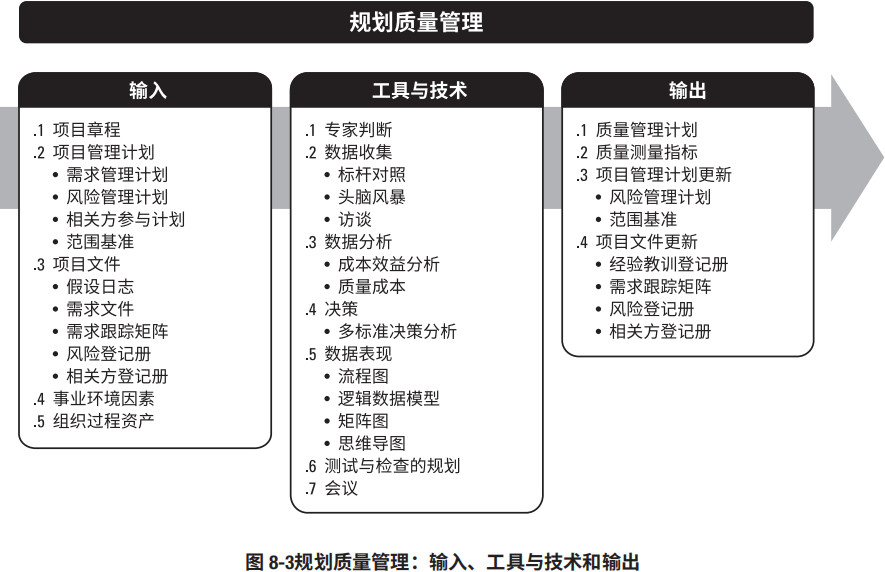

质量规划应与其他规划过程并行开展。例如，为满足既定的质量标准而对可交付成果提出变更，可能需要调整成本或进度计划，并就该变更对相关计划的影响进行详细风险分析。
本节讨论项目中最常用的质量规划技术，但在特定项目或应用领域中，还可采用许多其他质量规划技术。
8.1.1 规划质量管理：输入
8.1.1.1 项目章程
见 4.1.3.1 节。项目章程中包含对项目和产品特征的高层级描述，还包括可以影响项目质量管理的项目审批要求、可测量的项目目标和相关的成功标准。8.1.1.2 项目管理计划
见 4.2.3.1 节。项目管理计划组件包括（但不限于）：- 需求管理计划。见 5.1.3.2 节。需求管理计划提供了识别、分析和管理需求的方法，以供质量管理计划和质量测量指标借鉴。
- 风险管理计划。见 11.1.3.1 节。风险管理计划提供了识别、分析和监督风险的方法。将风险管理计划和质量管理计划的信息相结合，有助于成功交付产品和项目。
- 相关方参与计划。见 13.2.3.1 节。相关方参与计划提供了记录相关方需求和期望的方法，为质量管理奠定了基础。
- 范围基准。见 5.4.3.1 节。在确定适用于项目的质量标准和目标时，以及在确定要求质量审查的项目可交付成果和过程时，需要考虑WBS和项目范围说明书中记录的可交付成果。范围说明书包含可交付成果的验收标准。该标准的界定可能导致质量成本并进而导致项目成本的显著升高或降低。满足所有的验收标准意味着满足相关方的需求。
8.1.1.3 项目文件
可作为本过程输入的项目文件包括（但不限于）：- 假设日志。见 4.1.3.2 节。假设日志记录与质量要求和标准合规性有关的所有假设条件和制约因素。
- 需求文件。见 5.2.3.1 节。需求文件记录项目和产品为满足相关方的期望应达到的要求，它包括（但不限于）针对项目和产品的质量要求。这些需求有助于项目团队规划将如何实施项目质量控制。
- 需求跟踪矩阵。见 5.2.3.2 节。需求跟踪矩阵将产品需求连接到可交付成果，有助于确保需求文件中的各项需求都得到测试。矩阵提供了核实需求时所需测试的概述。
- 风险登记册。见 11.2.3.1 节。风险登记册包含可能影响质量要求的各种威胁和机会的信息。
- 相关方登记册。见 13.1.3.1 节。相关方登记册有助于识别对质量有特别兴趣或影响的相关方，尤其注重客户和项目发起人的需求和期望。
8.1.1.4 事业环境因素
能够影响规划质量管理过程的事业环境因素包括（但不限于）：- 政府法规；
- 特定应用领域的相关规则、标准和指南；
- 地理分布；
- 组织结构。
- 市场条件；
- 项目或可交付成果的工作条件或运行条件；
- 文化观念。
8.1.1.5 组织过程资产
能够影响规划质量管理过程的组织过程资产包括（但不限于）：- 组织的质量管理体系，包括政策、程序及指南。
- 质量模板，例如核查表、跟踪矩阵及其它；
- 历史数据库和经验教训知识库。
8.1.2 规划质量管理：工具与技术
8.1.2.1 专家判断
见 4.1.2.1 节。应征求具备以下专业知识或接受过相关培训的个人或小组的意见：- 质量保证；
- 质量控制；
- 质量测量结果；
- 质量改进；
- 质量体系。
8.1.2.2 数据收集
适用于本过程的数据收集技术包括（但不限于）：- 标杆对照。标杆对照是将实际或计划的项目实践或项目的质量标准与可比项目的实践进行比较，以便识别最佳实践，形成改进意见，并为绩效考核提供依据。作为标杆的项目可以来自执行组织内部或外部，或者来自同一应用领域或其他应用领域。标杆对照也允许用不同应用领域或行业的项目做类比。
- 头脑风暴。见 4.1.2.2 节。通过头脑风暴可以向团队成员或主题专家收集数据，以制定最适合新项目的质量管理计划。
- 访谈。见 5.2.2.2 节。访谈有经验的项目参与者、相关方和主题专家有助于了解他们对项目和产品质量的隐性和显性、正式和非正式的需求和期望。应在信任和保密的环境下开展访谈，以获得真实可信、不带偏见的反馈。
8.1.2.3 数据分析
适用于本过程的数据分析技术包括（但不限于）：成本效益分析
成本效益分析是用来估算备选方案优势和劣势的财务分析工具，以确定可以创造最佳效益的备选方案。成本效益分析可帮助项目经理确定规划的质量活动是否有效利用了成本。达到质量要求的主要效益包括减少返工、提高生产率、降低成本、提升相关方满意度及提升赢利能力。对每个质量活动进行成本效益分析，就是要比较其可能成本与预期效益。
质量成本
与项目有关的质量成本 (COQ) 包含以下一种或多种成本（图 8-5 提供了各组成本的例子）：
- 预防成本。预防特定项目的产品、可交付成果或服务质量低劣所带来的相关成本。
- 评估成本。评估、测量、审计和测试特定项目的产品、可交付成果或服务所带来的相关成本。
- 失败成本（内部/外部）。因产品、可交付成果或服务与相关方需求或期望不一致而导致的相关成本。
最优 COQ 能够在预防成本和评估成本之间找到恰当的投资平衡点，以规避失败成本。有关模型表明，最优项目质量成本，指在投资额外的预防/评估成本时，既无益处又不具备成本效益。
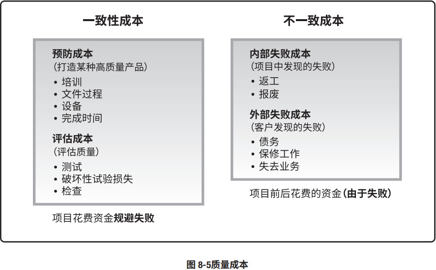
8.1.2.4 决策
适用于本过程的决策技术包括（但不限于）多标准决策分析。多标准决策分析工具（如优先矩阵）可用于识别关键事项和合适的备选方案，并通过一系列决策排列出备选方案的优先顺序。先对标准排序和加权，再应用于所有备选方案，计算出各个备选方案的数学得分，然后根据得分对备选方案排序。在本过程中，它有助于排定质量测量指标的优先顺序。8.1.2.5 数据表现
适用于本过程的数据表现技术包括（但不限于）：流程图
流程图，也称过程图，用来显示在一个或多个输入转化成一个或多个输出的过程中，所需要的步骤顺序和可能分支。它通过映射水平价值链的过程细节来显示活动、决策点、分支循环、并行路径及整体处理顺序。图 8-6 展示了其中一个版本的价值链，即 SIPOC（供应商、输入、过程、输出和客户）模型。流程图可能有助于了解和估算一个过程的质量成本。通过工作流的逻辑分支及其相对频率来估算质量成本。这些逻辑分支细分为完成符合要求的输出而需要开展的一致性工作和非一致性工作。用于展示过程步骤时，流程图有时又被称为“过程流程图”或“过程流向图”，可帮助改进过程并识别可能出现质量缺陷或可以纳入质量检查的地方。
逻辑数据模型
逻辑数据模型把组织数据可视化，以商业语言加以描述，不依赖任何特定技术。逻辑数据模型可用于识别会出现数据完整性或其他质量问题的地方。
矩阵图
矩阵图在行列交叉的位置展示因素、原因和目标之间的关系强弱。根据可用来比较因素的数量，项目经理可使用不同形状的矩阵图，如 L 型、T 型、Y 型、X 型、C 型和屋顶型矩阵。在本过程中，它们有助于识别对项目成功至关重要的质量测量指标。
思维导图
见 5.2.2.3 节。思维导图是一种用于可视化组织信息的绘图法。质量思维导图通常是基于单个质量概念创建的，是绘制在空白的页面中央的图像，之后再增加以图像、词汇或词条形式表现的想法。思维导图技术可以有助于快速收集项目质量要求、制约因素、依赖关系和联系。
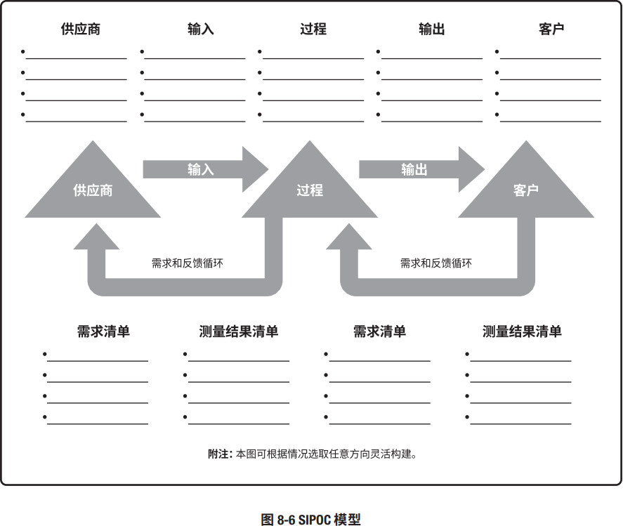
8.1.2.6 测试与检查的规划
在规划阶段，项目经理和项目团队决定如何测试或检查产品、可交付成果或服务，以满足相关方的需求和期望，以及如何满足产品的绩效和可靠性目标。不同行业有不同的测试与检查，可能包括软件项目的 α 测试和 β 测试、建筑项目的强度测试、制造和实地测试的检查，以及工程的无损伤测试。8.1.2.7 会议
项目团队可以召开规划会议来制定质量管理计划。参会者可能包括项目经理、项目发起人、选定的项目团队成员、选定的相关方、项目质量管理活动的负责人，以及其他必要人员。8.1.3 规划质量管理：输出
8.1.3.1 质量管理计划
质量管理计划是项目管理计划的组成部分，描述如何实施适用的政策、程序和指南以实现质量目标。它描述了项目管理团队为实现一系列项目质量目标所需的活动和资源。质量管理计划可以是正式或非正式的，非常详细或高度概括的，其风格与详细程度取决于项目的具体需要。应该在项目早期就对质量管理计划进行评审，以确保决策是基于准确信息的。这样做的好处是，更加关注项目的价值定位，降低因返工而造成的成本超支金额和进度延误次数。质量管理计划包括（但不限于）以下组成部分：
- 项目采用的质量标准；
- 项目的质量目标；
- 质量角色与职责；
- 需要质量审查的项目可交付成果和过程；
- 为项目规划的质量控制和质量管理活动；
- 项目使用的质量工具；
- 与项目有关的主要程序，例如处理不符合要求的情况、纠正措施程序，以及持续改进程序。
8.1.3.2 质量测量指标
质量测量指标专用于描述项目或产品属性，以及控制质量过程将如何验证符合程度。质量测量指标的例子包括按时完成的任务的百分比、以 CPI 测量的成本绩效、故障率、识别的日缺陷数量、每月总停机时间、每个代码行的错误、客户满意度分数，以及测试计划所涵盖的需求的百分比（即测试覆盖度）。8.1.3.3 项目管理计划更新
项目管理计划的任何变更都以变更请求的形式提出，且通过组织的变更控制过程进行处理。可能需要变更请求的项目管理计划组成部分包括（但不限于）：- 风险管理计划。见 11.1.3.1 节。在确定质量管理方法时可能需要更改已商定的项目风险管理方法，这些变更会记录在风险管理计划中。
- 范围基准。见 5.4.3.1 节。如果需要增加特定的质量管理活动，范围基准可能因本过程而变更。 WBS 词典记录的质量要求可能需要更新。
8.1.3.4 项目文件更新
可在本过程更新的项目文件包括（但不限于）：- 经验教训登记册。见 4.4.3.1 节。在质量规划过程中遇到的挑战需要更新在经验教训登记册中。
- 需求跟踪矩阵。见 5.2.3.2 节。本过程指定的质量要求，记录在需求跟踪矩阵中。
- 风险登记册。见 11.2.3.1 节。在本过程中识别的新风险记录在风险登记册中，并通过风险管理过程进行管理。
- 相关方登记册。见 13.1.3.1 节。如果在本过程中收集到有关现有或新相关方的其他信息，则记录到相关方登记册中。
8.2 管理质量
管理质量是把组织的质量政策用于项目，并将质量管理计划转化为可执行的质量活动的过程。本过程的主要作用是，提高实现质量目标的可能性，以及识别无效过程和导致质量低劣的原因。管理质量使用控制质量过程的数据和结果向相关方展示项目的总体质量状态。本过程需要在整个项目期间开展。图 8-7 描述本过程的输入、工具与技术和输出。图 8-8 是本过程的数据流向图。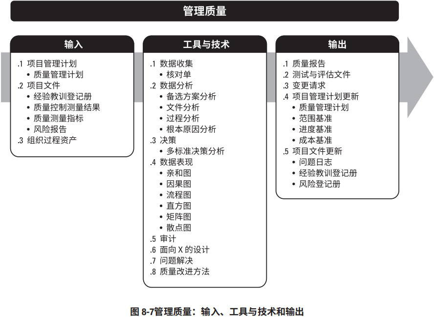
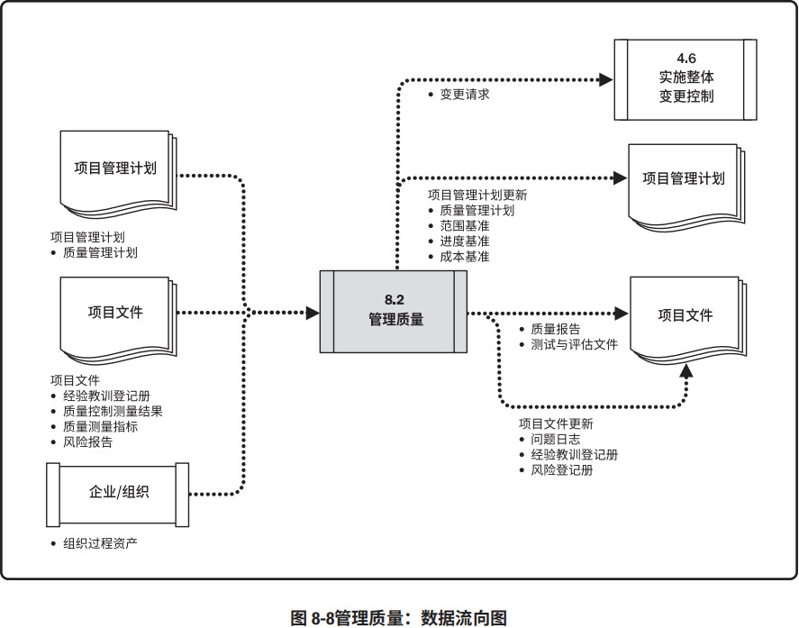
管理质量有时被称为“质量保证”，但“管理质量”的定义比“质量保证”更广，因其可用于非项目工作。在项目管理中，质量保证着眼于项目使用的过程，旨在高效地执行项目过程，包括遵守和满足标准，向相关方保证最终产品可以满足他们的需求、期望和要求。管理质量包括所有质量保证活动，还与产品设计和过程改进有关。管理质量的工作属于质量成本框架中的一致性工作。
管理质量过程执行在项目质量管理计划中所定义的一系列有计划、有系统的行动和过程，有助于：
- 通过执行有关产品特定方面的设计准则，设计出最优的成熟产品；
- 建立信心，相信通过质量保证工具和技术（如质量审计和故障分析）可以使未来输出在完工时满足特定的需求和期望；
- 确保使用质量过程并确保其使用能够满足项目的质量目标；
- 提高过程和活动的效率与效果，以获得更好的成果和绩效并提高相关方的满意程度。
项目经理和项目团队可以通过组织的质量保证部门或其他组织职能执行某些管理质量活动，例如故障分析、实验设计和质量改进。质量保证部门在质量工具和技术的使用方面通常拥有跨组织经验，是良好的项目资源。
管理质量被认为是所有人的共同职责，包括项目经理、项目团队、项目发起人、执行组织的管理层，甚至是客户。所有人在管理项目质量方面都扮演一定的角色，尽管这些角色的人数和工作量不同。参与质量管理工作的程度取决于所在行业和项目管理风格。在敏捷项目中，整个项目期间的质量管理由所有团队成员执行；但在传统项目中，质量管理通常是特定团队成员的职责。
8.2.1 管理质量：输入
8.2.1.1 项目管理计划
见 4.2.3.1 节。项目管理计划组件包括（但不限于）质量管理计划。如 8.1.3.1 节所述，质量管理计划定义了项目和产品质量的可接受水平，并描述了如何确保可交付成果和过程达到这一质量水平。 质量管理计划还描述了不合格产品的处理方式以及需采取的纠正措施。8.2.1.2 项目文件
可作为本过程输入的项目文件包括（但不限于）：- 经验教训登记册。见 4.4.3.1 节。项目早期与质量管理有关的经验教训，可以运用到项目后期阶段，以提高质量管理的效率与效果。
- 质量控制测量结果。见 8.3.3.1 节。质量控制测量结果用于分析和评估项目过程和可交付成果的质量是否符合执行组织的标准或特定要求。质量控制测量结果也有助于分析这些测量结果的产生过程，以确定实际测量结果的正确程度。
- 质量测量指标。见 8.1.3.2 节。核实质量测量指标是控制质量过程的一个环节。管理质量过程依据这些质量测量指标设定项目的测试场景和可交付成果，用作改进举措的依据。
- 风险报告。见 11.2.3.2 节。管理质量过程使用风险报告识别整体项目风险的来源以及整体风险敞口的最重要的驱动因素，这些因素能够影响项目的质量目标。
8.2.1.3 组织过程资产
能够影响管理质量过程的组织过程资产包括（但不限于）：- 包括政策、程序及指南的组织质量管理体系；
- 质量模板，例如核查表、跟踪矩阵、测试计划、测试文件及其它模板；
- 以往审计的结果；
- 包含类似项目信息的经验教训知识库。
8.2.2 管理质量：工具与技术
8.2.2.1 数据收集
适用于本过程的数据收集技术包括（但不限于）核对单（见 11.2.2.2 节）。核对单是一种结构化工 具，通常列出特定组成部分，用来核实所要求的一系列步骤是否已得到执行或检查需求列表是否已 得到满足。基于项目需求和实践，核对单可简可繁。许多组织都有标准化的核对单，用来规范地执 行经常性任务。在某些应用领域，核对单也可从专业协会或商业性服务机构获取。质量核对单应该 涵盖在范围基准中定义的验收标准。8.2.2.2 数据分析
适用于本过程的数据分析技术包括（但不限于）：- 备选方案分析。见 9.2.2.5 节。该技术用于评估已识别的可选方案，以选择那些最合适的质量方案或方法。
- 文件分析。见 5.2.2.3 节。分析项目控制过程所输出的不同文件，如质量报告、测试报告、绩效报告和偏差分析，可以重点指出可能超出控制范围之外并阻碍项目团队满足特定要求或相关方期望的过程。
- 过程分析。过程分析可以识别过程改进机会，同时检查在过程期间遇到的问题、制约因素，以及非增值活动。
- 根本原因分析 (RCA)。根本原因分析是确定引起偏差、缺陷或风险的根本原因的一种分析技术。一项根本原因可能引起多项偏差、缺陷或风险。根本原因分析还可以作为一项技术，用于识别 问题的根本原因并解决问题。消除所有根本原因可以杜绝问题再次发生。
8.2.2.3 决策
适用于本过程的决策技术包括（但不限于）多标准决策分析。见 8.1.2.4 节。在讨论影响项目或产 品质量的备选方案时，可以使用多标准决策评估多个标准。“项目”决策可以包括在不同执行情景 或供应商中加以选择，“产品”决策可以包括评估生命周期成本、进度、相关方的满意程度，以及 与解决产品缺陷有关的风险。8.2.2.4 数据表现
适用于本过程的数据表现技术包括（但不限于）：- 亲和图。见 5.2.2.5 节。亲和图可以对潜在缺陷成因进行分类，展示最应关注的领域。
- 因果图。因果图，又称“鱼骨图”、“why-why分析图”和“石川图”，将问题陈述的原因分解为离散的分支，有助于识别问题的主要原因或根本原因。图 8-9 是因果图的一个例子。
- 流程图。见 8.1.2.5 节。流程图展示了引发缺陷的一系列步骤。
- 直方图。直方图是一种展示数字数据的条形图，可以展示每个可交付成果的缺陷数量、缺陷成因的排列、各个过程的不合规次数，或项目或产品缺陷的其他表现形式。
- 矩阵图。见 8.1.2.5 节。矩阵图在行列交叉的位置展示因素、原因和目标之间的关系强弱。
- 散点图。散点图是一种展示两个变量之间的关系的图形，它能够展示两支轴的关系，一支轴表示过程、环境或活动的任何要素，另一支轴表示质量缺陷。
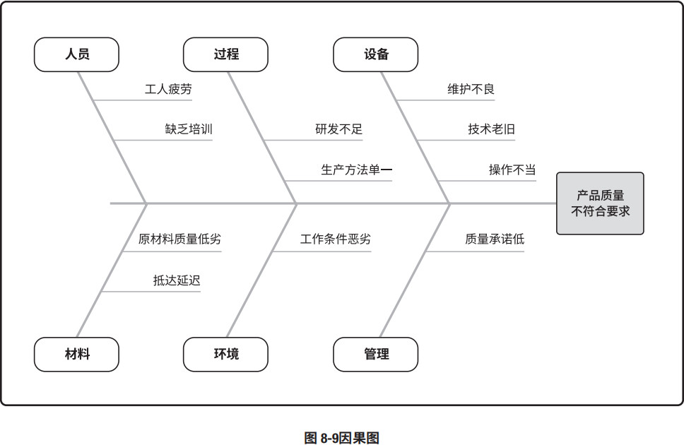
8.2.2.5 审计
审计是用于确定项目活动是否遵循了组织和项目的政策、过程与程序的一种结构化且独立的过 程。质量审计通常由项目外部的团队开展，如组织内部审计部门、项目管理办公室 (PMO) 或组织外部 的审计师。质量审计目标可能包括（但不限于）：- 识别全部正在实施的良好及最佳实践；
- 识别所有违规做法、差距及不足；
- 分享所在组织和/或行业中类似项目的良好实践；
- 积极、主动地提供协助，以改进过程的执行，从而帮助团队提高生产效率；
- 强调每次审计都应对组织经验教训知识库的积累做出贡献。
采取后续措施纠正问题，可以降低质量成本，并提高发起人或客户对项目产品的接受度。质量审计可事先安排，也可随机进行；可由内部或外部审计师进行。
质量审计还可确认已批准的变更请求（包括更新、纠正措施、缺陷补救和预防措施）的实施情况。
8.2.2.6 面向 X 的设计
面向 X 的设计 (DfX) 是产品设计期间可采用的一系列技术指南，旨在优化设计的特定方面，可以控制或提高产品最终特性。DfX 中的“X”可以是产品开发的不同方面，例如可靠性、调配、装配、制造、成本、服务、可用性、安全性和质量。使用 DfX 可以降低成本、改进质量、提高绩效和客户满意度。8.2.2.7 问题解决
问题解决发现解决问题或应对挑战的解决方案。它包括收集其他信息、具有批判性思维的、创造性的、量化的和/或逻辑性的解决方法。有效和系统化地解决问题是质量保证和质量改进的基本要素。问题可能在控制质量过程或质量审计中发现，也可能与过程或可交付成果有关。使用结构化的问题解决方法有助于消除问题和制定长久有效的解决方案。问题解决方法通常包括以下要素：- 定义问题；
- 识别根本原因；
- 生成可能的解决方案；
- 选择最佳解决方案；
- 执行解决方案；
- 验证解决方案的有效性。
8.2.2.8 质量改进方法
质量改进的开展，可基于质量控制过程的发现和建议、质量审计的发现，或管理质量过程的问题解决。计划 — 实施 — 检查 — 行动和六西格玛是最常用于分析和评估改进机会的两种质量改进工具。8.2.3 管理质量：输出
8.2.3.1 质量报告
质量报告可能是图形、数据或定性文件，其中包含的信息可帮助其他过程和部门采取纠正措施，以实现项目质量期望。质量报告的信息可以包含团队上报的质量管理问题，针对过程、项目和产品的改善建议，纠正措施建议（包括返工、缺陷/漏洞补救、100% 检查等），以及在控制质量过程中发现的情况的概述。8.2.3.2 测试与评估文件
可基于行业需求和组织模板创建测试与评估文件。它们是控制质量过程的输入，用于评估质量目标的实现情况。这些文件可能包括专门的核对单和详尽的需求跟踪矩阵。8.2.3.3 变更请求
见 4.3.3.4 节。如果管理质量过程期间出现了可能影响项目管理计划任何组成部分、项目文件或项目/产品管理过程的变更，项目经理应提交变更请求并遵循 4.6 节定义的实施整体变更控制过程。8.2.3.4 项目管理计划更新
项目管理计划的任何变更都以变更请求的形式提出，且通过组织的变更控制过程进行处理。可能需要变更请求的项目管理计划组成部分包括（但不限于）：- 质量管理计划。见 8.1.3.1 节。可能需要根据实际结果修改已商定的质量管理方法。
- 范围基准。见 5.4.3.1 节。范围基准可能因特定的质量管理活动而变更。
- 进度基准。见 6.5.3.1 节。进度基准可能因特定的质量管理活动而变更。
- 成本基准。见 7.3.3.1 节。成本基准可能因特定的质量管理活动而变更。
8.2.3.5 项目文件更新
可在本过程更新的项目文件包括（但不限于）：- 问题日志。见 4.3.3.3 节。在本过程中提出的新问题记录到问题日志中。
- 经验教训登记册。见 4.4.3.1 节。项目中遇到的挑战、本应可以规避这些挑战的方法，以及良好的质量管理方式，需要记录在经验教训登记册中。
- 风险登记册。见 11.2.3.1 节。在本过程中识别的新风险记录在风险登记册中，并通过风险管理过程进行管理。
8.3 控制质量
控制质量是为了评估绩效，确保项目输出完整、正确且满足客户期望，而监督和记录质量管理活动执行结果的过程。本过程的主要作用是，核实项目可交付成果和工作已经达到主要相关方的质量要求，可供最终验收。控制质量过程确定项目输出是否达到预期目的，这些输出需要满足所有适用标准、要求、法规和规范。本过程需要在整个项目期间开展。图 8-10 描述本过程的输入、工具与技术和输出。图 8-11 是本过程的数据流向图。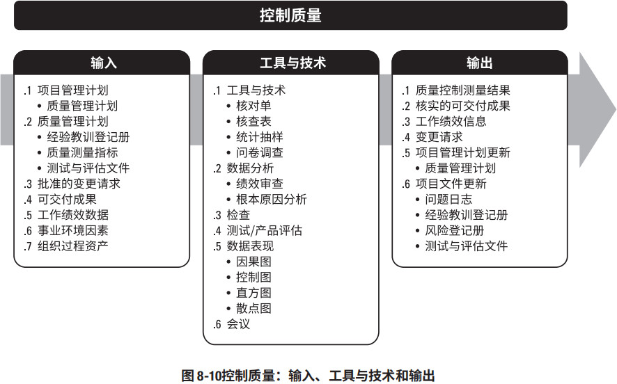
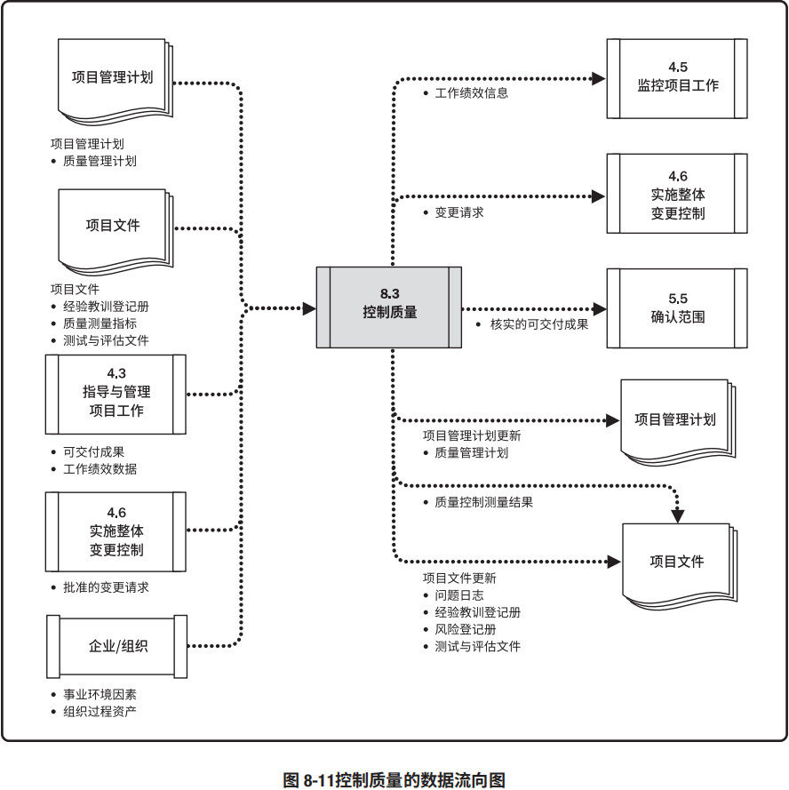
控制质量过程的目的是在用户验收和最终交付之前测量产品或服务的完整性、合规性和适用性。本过程通过测量所有步骤、属性和变量，来核实与规划阶段所描述规范的一致性和合规性。
在整个项目期间应执行质量控制，用可靠的数据来证明项目已经达到发起人和/或客户的验收标准。
控制质量的努力程度和执行程度可能会因所在行业和项目管理风格而不同。例如，相比其他行业，制药、医疗、运输和核能产业可能拥有更加严格的质量控制程序，为满足标准付出的工作也会更广；在敏捷项目中，控制质量活动可能由所有团队成员在整个项目生命周期中执行，而在瀑布式项目中，控制质量活动由特定团队成员在特定时间点或者项目或阶段快结束时执行。
8.3.1 控制质量：输入
8.3.1.1 项目管理计划
见 4.2.3.1 节。项目管理计划组件包括（但不限于）质量管理计划。见 8.1.3.1 节。质量管理计划定义了如何在项目中开展质量控制。8.3.1.2 项目文件
可作为本过程输入的项目文件包括（但不限于）：- 经验教训登记册。见 4.4.3.1 节。在项目早期获得的经验教训可以运用到后期阶段，以改进质量控制。
- 质量测量指标。见 8.1.3.2 节。质量测量指标专用于描述项目或产品属性，以及控制质量过程将如何验证符合程度。
- 测试与评估文件。见 8.2.3.2 节。测试与评估文件用于评估质量目标的实现程度。
8.3.1.3 批准的变更请求
见 4.6.3.1 节。在实施整体变更控制过程中，通过更新变更日志，显示哪些变更已经得到批准，哪些变更没有得到批准。批准的变更请求可包括各种修正，如缺陷补救、修订的工作方法和修订的进度计划。完成局部变更时，如果步骤不完整或不正确，可能会导致不一致和延迟。批准的变更请求的实施需要核实，并需要确认完整性、正确性，以及是否重新测试。8.3.1.4 可交付成果
可交付成果指的是在某一过程、阶段或项目完成时，必须产出的任何独特并可核实的产品、成果或服务能力。作为指导与管理项目工作过程的输出的可交付成果将得到检查，并与项目范围说明书定义的验收标准作比较。8.3.1.5 工作绩效数据
见 4.3.3.2 节。工作绩效数据包括产品状态数据，例如观察结果、质量测量指标、技术绩效测量数据，以及关于进度绩效和成本绩效的项目质量信息。8.3.1.6 事业环境因素
能够影响控制质量过程的事业环境因素包括（但不限于）：- 项目管理信息系统；质量管理软件可用于跟进过程或可交付成果中的错误和差异；
- 政府法规；
- 特定应用领域的相关规则、标准和指南。
8.3.1.7 组织过程资产
能够影响控制质量过程的组织过程资产包括（但不限于）：- 质量标准和政策；
- 质量模板，例如核查表、核对单等；
- 问题与缺陷报告程序及沟通政策。
8.3.2 控制质量：工具与技术
8.3.2.1 数据收集
适用于本过程的数据收集技术包括（但不限于）：核对单
见 11.2.2.2 节。核对单有助于以结构化方式管理控制质量活动。
核查表
核查表，又称计数表，用于合理排列各种事项，以便有效地收集关于潜在质量问题的有用数据。在开展检查以识别缺陷时，用核查表收集属性数据就特别方便，例如关于缺陷数量或后果的数据。见图 8-12。
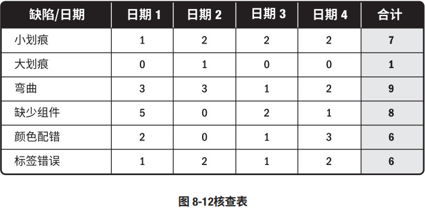
统计抽样
统计抽样是指从目标总体中选取部分样本用于检查（如从 75 张工程图纸中随机抽取10 张）。样本用于测量控制和确认质量。抽样的频率和规模应在规划质量管理过程中确定。
问卷调查
问卷调查可用于在部署产品或服务之后收集关于客户满意度的数据。在问卷调查中识别的缺陷相关成本可被视为 COQ 模型中的外部失败成本，给组织带来的影响会超出成本本身。
8.3.2.2 数据分析
适用于本过程的数据分析技术包括（但不限于）：- 绩效审查。绩效审查针对实际结果，测量、比较和分析规划质量管理过程中定义的质量测量指标。
- 根本原因分析 (RCA)。见 8.2.2.2 节。根本原因分析用于识别缺陷成因。
8.3.2.3 检查
检查是指检验工作产品，以确定是否符合书面标准。检查的结果通常包括相关的测量数据，可在任何层面上进行。可以检查单个活动的成果，也可以检查项目的最终产品。检查也可称为审查、同行审查、审计或巡检等，而在某些应用领域，这些术语的含义比较狭窄和具体。检查也可用于确认缺陷补救。8.3.2.4 测试/产品评估
测试是一种有组织的、结构化的调查，旨在根据项目需求提供有关被测产品或服务质量的客观信息。测试的目的是找出产品或服务中存在的错误、缺陷、漏洞或其他不合规问题。用于评估各项需求的测试的类型、数量和程度是项目质量计划的一部分，具体取决于项目的性质、时间、预算或其他制约因素。测试可以贯穿于整个项目，可以随着项目的不同组成部分变得可用时进行，也可以在项目结束（即交付最终可交付成果）时进行。早期测试有助于识别不合规问题，帮助减少修补不合规组件的成本。不同应用领域需要不同测试。例如，软件测试可能包括单元测试、集成测试、黑盒测试、白盒测试、接口测试、回归测试、α 测试等；在建筑项目中，测试可能包括水泥强度测试、混凝土和易性测试、在建筑工地进行的旨在测试硬化混凝土结构的质量的无损伤测试，以及土壤试验；在硬件开发中，测试可能包括环境应力筛选、老化测试、系统测试等。
8.3.2.5 数据表现
适用于本过程的数据表现技术包括（但不限于）：- 因果图。见 8.2.2.4 节。因果图用于识别质量缺陷和错误可能造成的结果。
- 控制图。控制图用于确定一个过程是否稳定，或者是否具有可预测的绩效。规格上限和下限是根据要求制定的，反映了可允许的最大值和最小值。上下控制界限不同于规格界限。控制界限根据标准的统计原则，通过标准的统计计算确定，代表一个稳定过程的自然波动范围。项目经理和相关方可基于计算出的控制界限，识别须采取纠正措施的检查点，以预防不在控制界限内的绩效。控制图可用于监测各种类型的输出变量。虽然控制图最常用来跟踪批量生产中的重复性活动，但也可用来监测成本与进度偏差、产量、范围变更频率或其他管理工作成果，以便帮助确定项目管理过程是否受控。
- 直方图。见 8.2.2.4 节。直方图可按来源或组成部分展示缺陷数量。
- 散点图。见 8.2.2.4 节。散点图可在一支轴上展示计划的绩效，在另一支轴上展示实际绩效。
8.3.2.6 会议
以下会议可作为控制质量过程的一部分：- 审查已批准的变更请求。对所有已批准的变更请求进行审查，以核实它们是否已按批准的方式实施，确认是否已完成局部变更，以及是否已执行、测试、完成和证实所有部分。
- 回顾/经验教训。项目团队举行的会议，旨在讨论：
- 项目/阶段的成功要素；
- 待改进之处；
- 当前项目和未来项目可增加的内容；
- 可增加到组织过程资产中的内容。
8.3.3 控制质量：输出
8.3.3.1 质量控制测量结果
控制质量的测量结果是对质量控制活动的结果的书面记录，应以质量管理计划所确定的格式加以记录。8.3.3.2 核实的可交付成果
控制质量过程的一个目的就是确定可交付成果的正确性。开展控制质量过程的结果是核实的可交付成果，后者又是确认范围过程的一项输入（见 5.5 节），以便正式验收。如果存在任何与可交付成果有关的变更请求或改进事项，可能会执行变更、开展检查并重新核实。8.3.3.3 工作绩效信息
见 4.5.1.3 节。工作绩效信息包含有关项目需求实现情况的信息、拒绝的原因、要求的返工、纠正措施建议、核实的可交付成果列表、质量测量指标的状态，以及过程调整需求。8.3.3.4 变更请求
见 4.3.3.4 节。如果控制质量过程期间出现了可能影响项目管理计划任何组成部分或项目文件的变更，项目经理应提交变更请求，且应该通过实施整体变更控制过程（见 4.6 节）对变更请求进行审查和处理。8.3.3.5 项目管理计划更新
项目管理计划的任何变更都以变更请求的形式提出，且通过组织的变更控制过程进行处理。可能需要变更请求的项目管理计划组成部分包括（但不限于）质量管理计划，见 8.1.3.1 节。8.3.3.6 项目文件更新
可在本过程更新的项目文件包括（但不限于）：- 问题日志。见 4.3.3.3 节。多次不符合质量要求的可交付成果通常被记录为问题。
- 经验教训登记册。见 4.4.3.1 节。质量缺陷的来源、本应可以规避它们的方法，以及有效的处理方式，都应该记录到经验教训登记册中。
- 风险登记册。见 11.2.3.1 节。在本过程中识别的新风险记录在风险登记册中，并通过风险管理过程进行管理。
- 测试与评估文件。见 8.2.3.2 节。本过程可能导致测试与评估文件修改，使未来的测试更加有效。